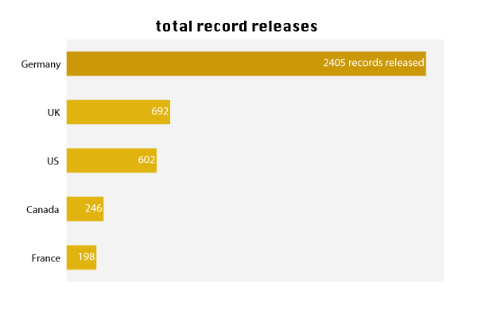
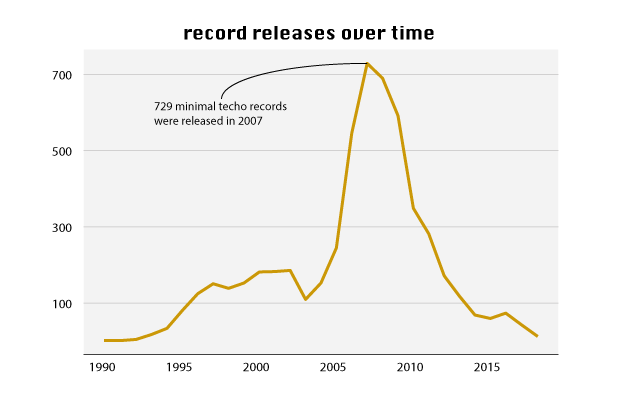
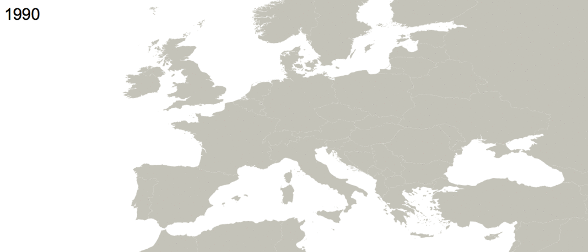

Too cool for school dept.
Minimal Techno is Over
BY Max Anderson
Published in the future
Minimal techno is dead, long live minimal techno. Minimal techno is a subgenre with its roots in the 90s and can be characterized by its use of repetition with, well, minimal variations.
My fellow nerds over at Discogs thankfully catalogue all minimal techno releases, and pulling this data reveals two things: Pitch your next album to a German label and consider going back in time about a decade or so.

Germany dominates the market
SOURCE: Discogs
The rise and fall of minimal techno
SOURCE: Discogs
Why did the number of record releases drop so starkly in 2007? You could theorize that some subgenres are a fad and follow an ebb and flow, and in future investigations I’ll look at other subgenres to make the comparison. It could also be that a subgenre one would assume people mostly listen to in dance clubs might not be able to sustain 729 record releases every year.
Whatever the reason, save the below gif, grab a Club Mate, and hit the dance floor.
Released by country over time
SOURCE: Discogs
Have a look at the scraper and data on github.